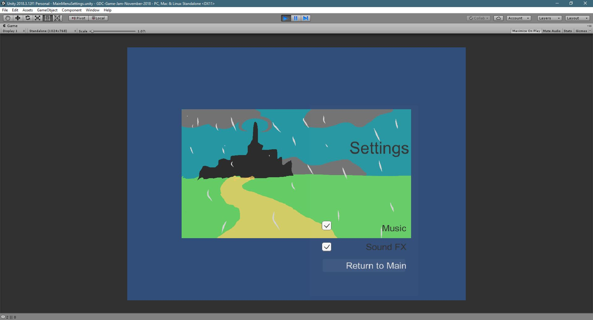
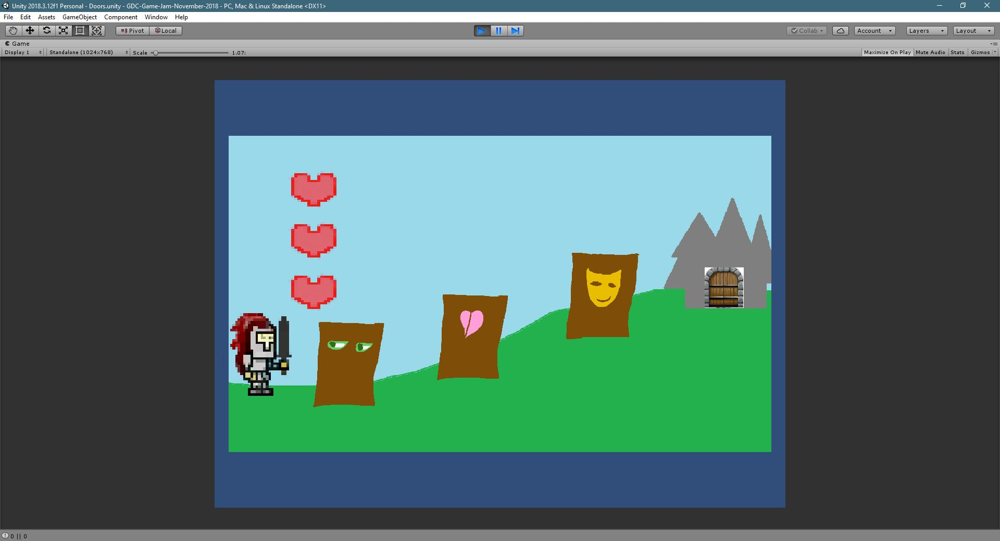
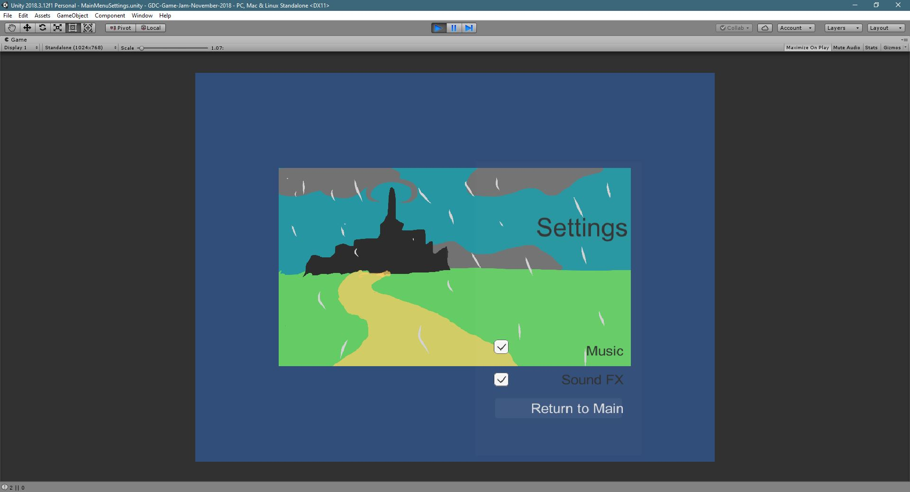
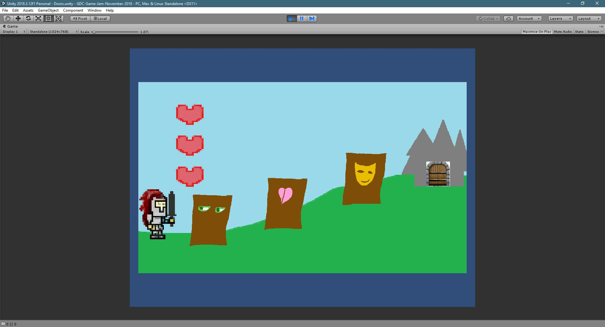
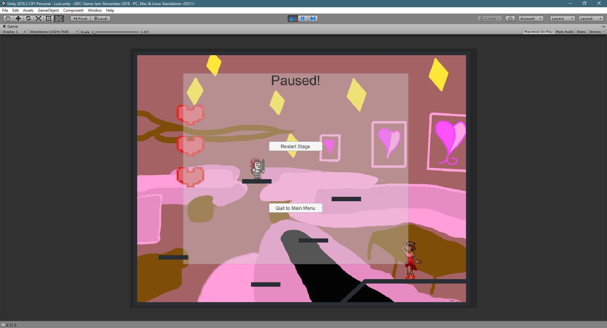
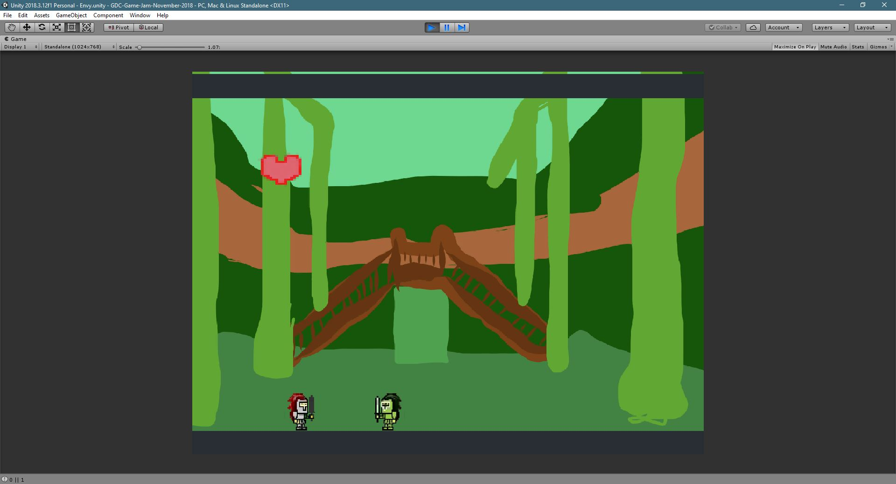
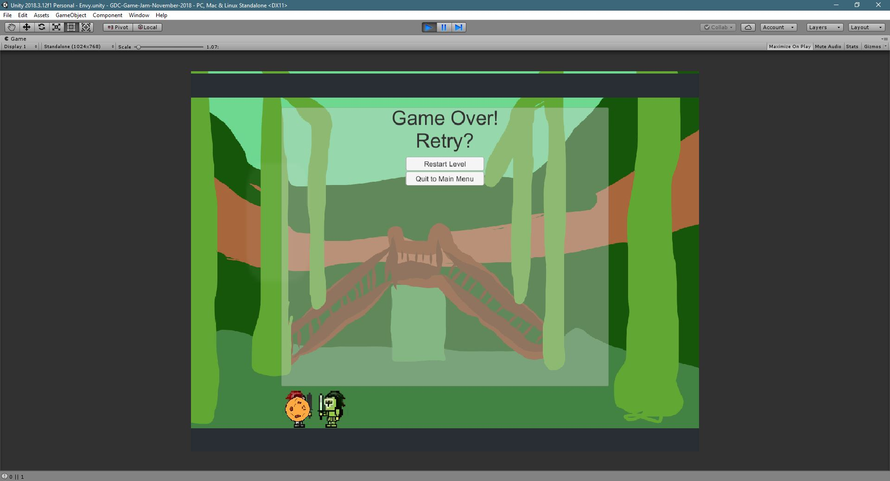
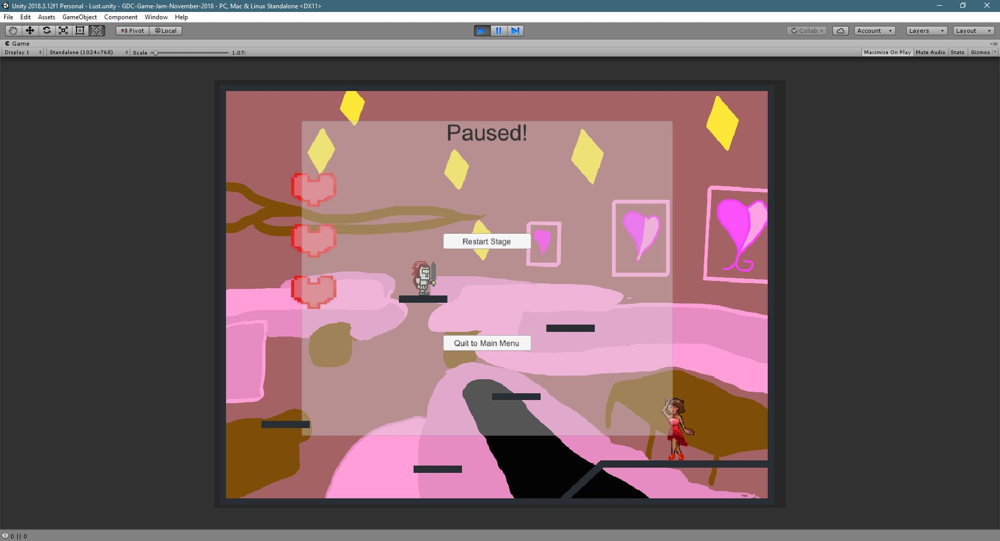
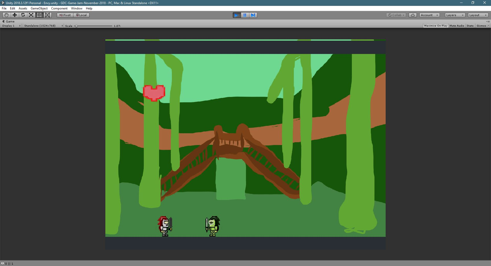
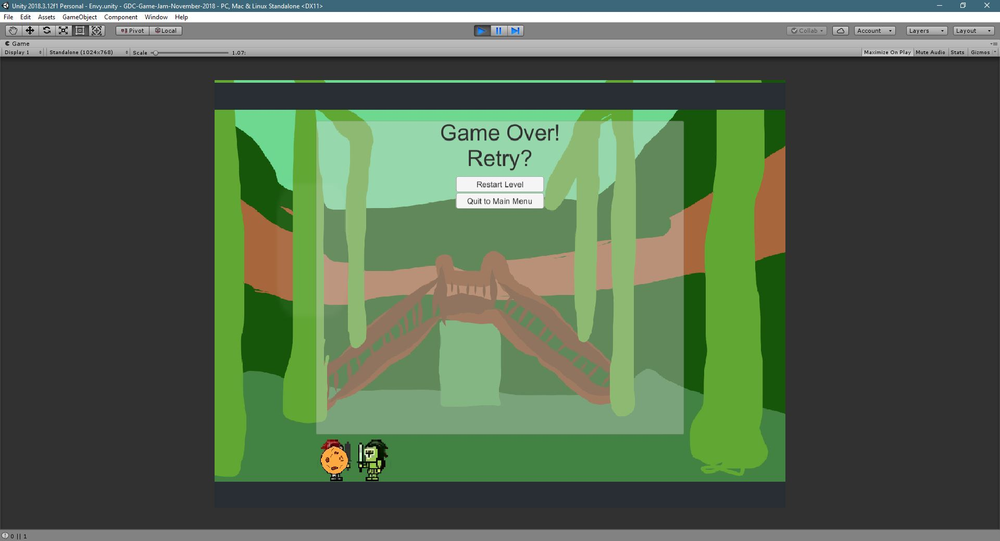

Meowsers Trousers and the Quest for the Holy Grail
Game Jam
Game Development Club had an in-house Game Jam in November 2018 in which all club members worked on a single game for 48 hours. The game concepts we had to include were upgrades and masquarade. This game concept evolved into what would come to be known as Meowsers Trousers and the Quest for the Holy Grail.
Concept
The ultimate goal for the game was to play as Meowser and go on a quest to retrieve the Holy Grail. You used your sword to fight, which was upgradable from one level to the next. On the quest you would come to battle incarnations of the seven deadly sins (of which we had completed 2, lust and pride.) After battling them all, the player will find and retrieve the Holy Grail. I mostly worked with the design team for this project and I helped create designs for everything from levels to characters and I learned quite a bit about working with a design team and how to set a proper scope for the game.
 



 




